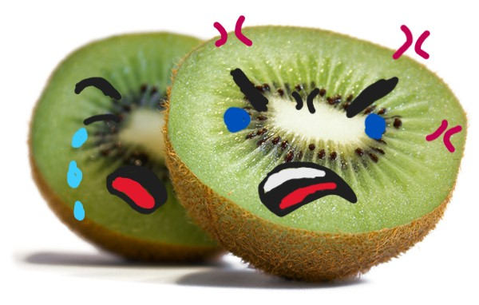

Você está antenado nas últimas atualizações do querido planeta Terra? Não? Então se ligue nas informações quentinhas!
Os kiwis (Apteryx australis) são seres que só podem ser encontrados na Nova Zelândia. Dito isso, pode-se imaginar que sua existência esteja em constante risco, diferente do outro kiwi (Actinidia) que, apesar de ser originário da China, é plantado em diversos cantos do planeta, desde as montanhas do sudeste chinês aos terrenos de Campos de Jordão.
Os kiwis (A. australis) costumam encontrar um parceiro durante sua vida e manter essa relação monogâmica até 20 anos. O segredo de uma relação saudável está em ter um olfato tão fenomenal que, além de servir para caças de pequenos insetos, larvas e frutas, consegue sentir o cheiro de problema e previnir uma briga antes que ela aconteça. Por outro lado, o kiwi (Actinidia) não usufrui da mesma habilidade, tendo uma instabilidade característica em seus relacionamentos e por essa razão, desenvolvendo os dois sexos em um único corpo e adotando a reprodução assexuada.
